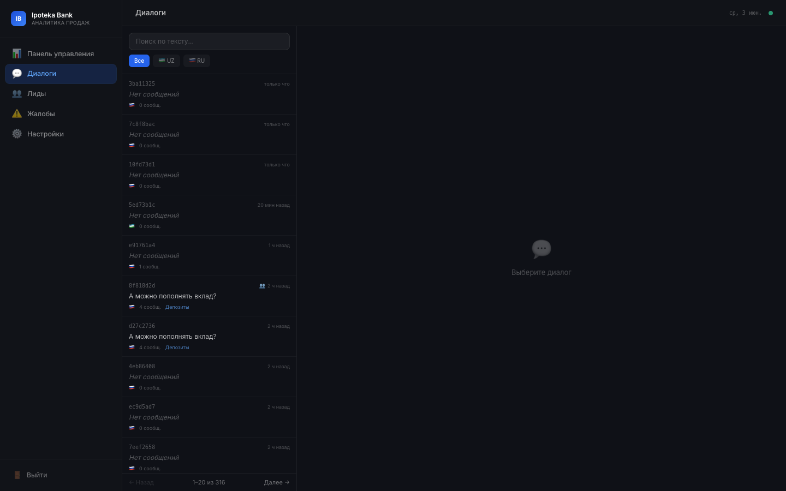

Аналитика · Диалоги
Контроль качества каждого диалога

Список диалогов

Детальный просмотр
Поиск и фильтрация
Фильтр по языку (RU/UZ), времени, содержанию. Быстрый поиск по ключевым словам в тексте диалога.
Chat-bubble интерфейс
Диалог отображается в виде привычных пузырьков — клиент слева, AI справа. Легко читается без технических знаний.
Флаги эскалации и жалоб
Диалоги с сигналами жалоб (⚠️) и эскалациями (👥) отмечаются визуально — приоритизация без ручного чтения.
Связь Диалог → Лид
Кнопка «💬 Открыть диалог» в карточке лида — оператор переходит к полной переписке, понимает намерение клиента перед звонком.
Ценность для оператора
Перед звонком клиенту менеджер видит: что именно интересовало клиента, какие вопросы задавал, что отвечал AI — разговор начинается продуктивно, без «расскажите о себе».
12
демо-диалогов в системе
2
языка отображения